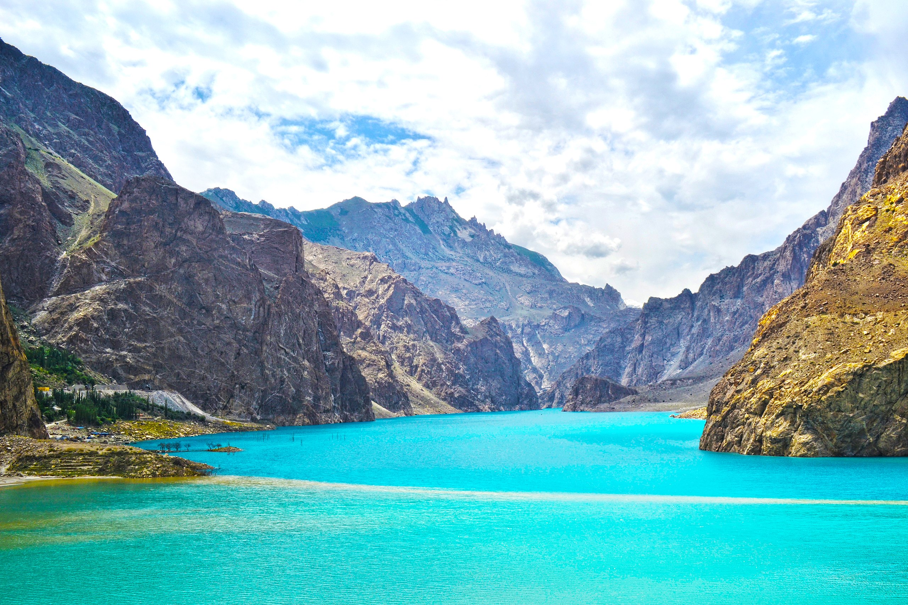
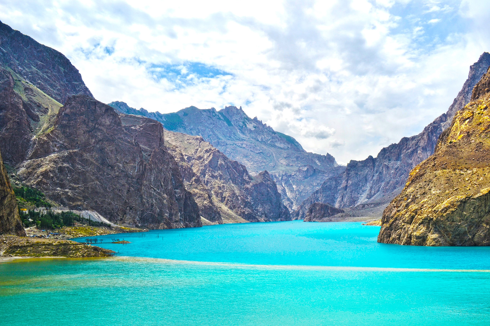

Attabad Lake is a lake located in the Gojal region of Hunza Valley in Gilgit-Baltistan, Pakistan. It was created in January 2010 as the result of a major landslide in Attabad.The lake has become one of the biggest tourist attractions in Gilgit-Baltistan, offering activities like boating, jet-skiing, fishing and other recreational activities.
The lake was formed when Attabad village in Hunza Valley in Gilgit-Baltistan had a landslide, 14 kilometres (9 mi) upstream (east) of Karimabad that occurred on 4 January 2010. The landslide killed twenty people and blocked the flow of the Hunza River for five months. The lake flooding displaced 6,000 people from upstream villages, stranded (from land transportation routes) a further 25,000, and inundated over 19 kilometres (12 mi) of the Karakoram Highway. The lake reached 21 kilometres (13 mi) long and over 100 metres (330 ft) in depth by the first week of June 2010 when it began flowing over the landslide dam, completely submerging lower Shishkat and partly flooding Gulmit.The subdivision of Gojal has the greatest number of flooded buildings, over 170 houses, and 120 shops. The residents also had shortages of food and other items due to the blockage of the Karakoram Highway.
 
